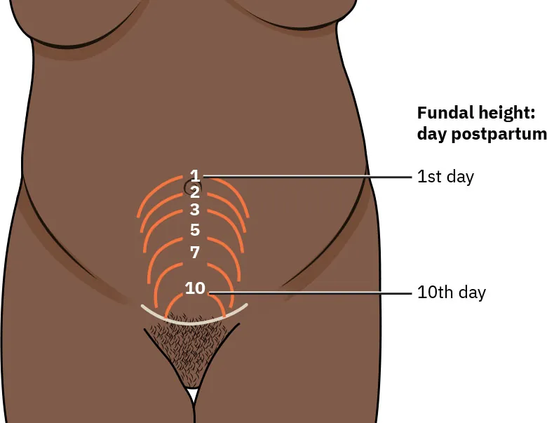

O arco completoO fluxograma-mestreTimeline consolidadaQuiz gold
Ao final desta página, você consegue:
Enquadrar a febre puerperal na régua do tempo (24h × persistente 2º–10º dia)
Cravar endometrite pela tríade e ler os lóquios
Tratar com Clinda + Genta e saber a regra de alta
Escalar a febre refratária sem trocar o antibiótico (imagem → tromboflebite → heparina)
Separar ingurgitamento de mastite e tratar mama/abscesso
Nunca parar o aleitamento — e conhecer as duas exceções
O caso inteiro, do risco à alta
O arco da paciente, do começo ao fim: fatores de risco (desnutrição, anemia, múltiplos toques, cesárea após trabalho de parto arrastado) → endometrite, o protótipo da infecção puerperal → Clindamicina + Gentamicina até 48–72h afebril → alta sem antibiótico. E o desdobramento, caso a febre não cedesse: a cascata — imagem procurando abscesso → se excluído, tromboflebite pélvica séptica → acrescenta heparina sem parar o antibiótico. Uma paciente, um caminho completo.
O fluxograma-mestre da febre no puerpério
A arquitetura que organiza tudo: febre no puerpério abre em duas ramificações temporais — primeiras 24h (trauma, não valorizar) × persistente do 2º ao 10º dia. A partir da persistente, o segundo garfo: genital (endometrite) × mama (mastite). E cada ramo tem a sua própria cascata de complicação. Esse mapa visto de cima é o que permite, diante de qualquer puérpera febril, saber em que galho você está antes de decidir a conduta.
Fluxograma-mestre — Febre no puerpério
Interativo: clique nos galhos e nas cascatas · setas navegam.
O mapa de decisão visto de cima. Primeiro garfo, temporal: 24h (trauma) × persistente (2º–10º dia). Segundo garfo, de território: genital (endometrite) × mama (mastite). Cada ramo desce por sua própria cascata — e a cor identifica o galho antes de qualquer rótulo. É a arquitetura que permite saber em que galho se está antes de decidir a conduta.
A Linha do Tempo consolidada
A Linha do Tempo do Puerpério fecha com as três raias hidratadas: a febril (nascida na abertura), a de lóquios (hemático até 3º–4º dia → clareia; piossanguinolento sempre anormal) e a da mama (ingurgitamento na 1ª semana → mastite na 2ª–3ª → abscesso). É a régua consultável que resume "onde no puerpério cada evento cai".
Linha do Tempo do Puerpério · consolidada
—
Dia 0Dia 10Sem 2–3Dia 42
Febre
Lóquios
Mama
A régua consultável do puerpério — onde cada evento cai no tempo. Fica salva no seu dispositivo.
Os dois territórios da febre puerperal
Interativo: toque em cada território.
Onde a febre mora: o útero puerperal (território genital → endometrite, tríade de Bumm) e a mama lactante (território mamário → mastite, tríade flogística). O fechamento anatômico do arco — cada sítio com sua micro-assinatura clínica.uso educacional não comercial

O útero que obedeceu — a involução normal
A involução esperada: o fundo próximo à cicatriz umbilical nas primeiras 24–48h e descendo cerca de 1 cm ("um dedo") por dia até alcançar a pelve por volta do 10º dia. As linhas semicirculares marcam a posição palpável do fundo em dias sucessivos. É o contraste de fechamento com o útero subinvoluído do caso — aquele que não desceu como deveria.
Rice University / OpenStax, Maternal Newborn Nursing, Fig. 20.5 — CC BY-NC-SA 4.0 · página de origem
Recuperação ativa ✅
Antes de fechar, o recall ativo (quiz gold, abaixo) percorre os pontos que a banca mais cobra: a tríade e seu nome, a dupla Clinda + Genta e o tempo, a cascata da febre refratária, e a pegadinha do aleitamento.
Quiz gold — recuperação ativa
Puérpera no 8º dia pós-cesárea, febre há 3 dias, útero doloroso, amolecido e subinvoluído, lóquios piossanguinolentos. Iniciado Clindamicina + Gentamicina IV; após 48h a febre persiste, e a USG de pelve não mostra abscesso. Qual a conduta?
B) Correta. Imagem sem abscesso + febre refratária = tromboflebite pélvica séptica (diagnóstico de exclusão); acrescenta heparina sem parar o antibiótico, e a melhora da febre é a prova terapêutica.
A)Trocar o antibiótico é o reflexo errado — o espectro não é o problema; o trombo é.
C)Heparina isolada abandona o tratamento da infecção. A regra é somar (ATB + heparina), não substituir.
D)Dar alta com febre persistente ignora a refratariedade; e a endometrite não recebe ATB de manutenção mesmo quando resolve.
Sobre o eixo mamário, assinale a correta:
A) Correta. O discriminador é o trio febre + flogose focal + estado geral — a mastite tem, o ingurgitamento não. Mesma mama distendida, decisões opostas.
B)Nunca se para o aleitamento — o esvaziamento é tratamento. É a grande pegadinha.
C)Clinda + Genta é da endometrite; a mastite ambulatorial é cefalexina 500 mg 6/6h ~10d (grave = oxacilina).
D)Abscesso é coleção — exige drenagem; antibiótico e analgésico acompanham, mas não substituem a drenagem.
Julgue as afirmativas sobre a régua temporal e a marca clínica da endometrite e marque a sequência correta (V/F): I. Febre nas primeiras 24h pós-parto é valorizada como sinal de infecção genital. II. A tríade uterina (doloroso + amolecido + subinvoluído), com febre, já sugere endometrite, independentemente do odor. III. A endometrite é a principal morbidade febril puerperal.
A) F – V – V.I é falsa: as primeiras 24h não se valorizam (resposta ao trauma); valoriza-se a febre persistente do 2º ao 10º dia. II é verdadeira: a tríade + febre bastam; o odor/lóquio piossanguinolento é bônus, não requisito. III é verdadeira: a endometrite é, disparada, a principal morbidade febril puerperal.
B)Erra a I ao valorizar a febre das 24h — troca os dois extremos da régua.
C)Erra a II ao exigir o odor — cai na pegadinha requisito × bônus.
D)Erra a III ao negar que a endometrite seja a principal morbidade febril puerperal.
O próximo fio do puerpério
O puerpério ainda reserva um capítulo que sangra em vez de infectar — a hemorragia puerperal, outra emergência com sua própria régua e suas próprias armadilhas. É o próximo fio clínico a puxar.
O próximo fio clínico
Fechado o puerpério que infecta, o próximo é o puerpério que sangra — a hemorragia puerperal.
Ache o galho antes da conduta: quando (24h × persistente), depois onde (genital × mama) — cada ramo tem a sua cascata.